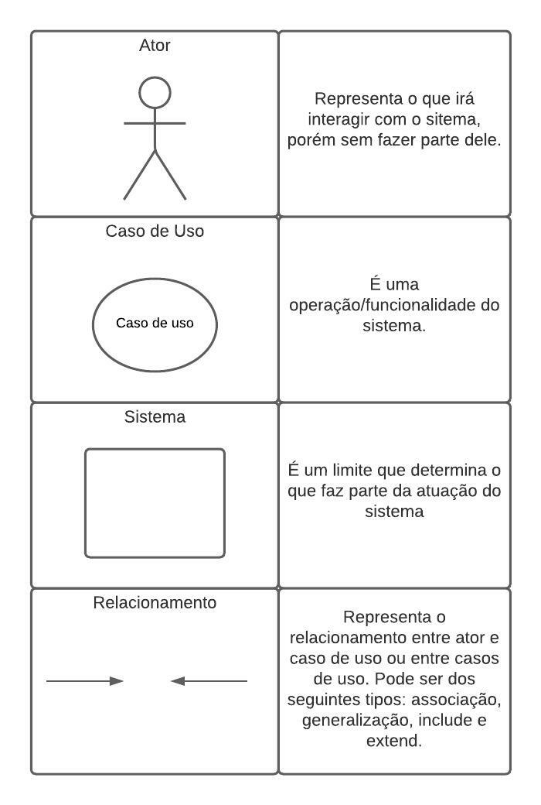

Casos de Uso
1. Introdução
Caso de uso é uma técnica de modelagem de requisitos funcionais, através dela é capaz de representar um conjunto de sequências de ações que o usuário é capaz de realizar no sistema seguindo um fluxo de eventos possíveis para atingir um determinado objetivo. Comumente representado por um diagrama UML aonde se expõe seus elementos: atores, sistema, casos de uso e relacionamento. Entretanto é importante fazer uso de especificações de casos de uso, uma descrição complementar ao diagrama que trás mais detalhes sobre os casos de uso do diagrama.
2. Participantes
- Artur Vinicius
- Pablo Christianno
3. Diagrama UML de Casos de Uso
3.1 Elementos do Diagrama de Casos de Uso

Figura 1: Elementos dos Diagramas de Casos de Uso
Fonte: Elaboração Própria
3.2 Diagrama de Casos para o Aluno

Figura 2: Diagrama de Caso de Uso
Fonte: Elaboração Própria
3.3 Diagrama UML de Casos de Uso para o Professor

Figura 3: Diagrama de Caso de Uso
Fonte: Elaboração Própria
4. Especificação dos Casos de Uso
UC01
| UC01 | Informações |
|---|---|
| Descrição | O Aluno deve ser capaz de sincronizar o app com sua plataforma de ensino |
| Ator | Aluno |
| Pré-condições | Acesso à internet |
| frequência de uso | Eventual |
| Ação | O Aluno acessar sua plataforma de ensino |
| Fluxo Principal | FP01: Fluxo para fazer a Sincronização com o app1. O ator entra no aplicativo.2. Sistema exibe um campo para inserir endereço eletrônico e uma opção para sincronizar por QrCode.3. Ator insere endereço eletrônico de sua plataforma de ensino. 4. Sistema faz a sincronização entre o app e a plataforma. |
| Fluxo Alternativo | FA01: Fluxo para fazer a Sincronização com o app1. O ator entra no aplicativo.2. Sistema exibe um campo para inserir endereço eletrônico e uma opção para sincronizar por QrCode.1. Ator escolhe sincronizar por QrCode. 4. Sistema abre o scaner de QrCode.5. Ator aponta a camera do aparelho para o QrCode.6. Sistema faz a sincronização entre o app e a plataforma. |
| Pós-Condição | O Ator poderá acessar opção de login |
| Data de Criação | 10/12/2022 |
tabela 1: Especificação de sincronização
Fonte: Elaboração Própria
UC02
| UC02 | Informações |
|---|---|
| Descrição | O Aluno realiza login |
| Ator | Aluno |
| Pré-condições | Acesso à internet, app está sincronizado e possuir conta |
| frequência de uso | Eventual |
| Ação | O Aluno entrar na sua conta |
| Fluxo Principal | FP01: Fluxo para fazer login1. O ator entra no aplicativo.2. O ator sincroniza o app com sua plataforma de ensino.3. Sistema exibe dois campos, um de identificação e outro de senha. 4. Ator insere seus dados de login.5. Ator aperta no botão de entrar.6. Sistema Verifica dados. |
| Fluxo Alternativo | FA01: Fluxo para fazer login1. O ator entra no aplicativo.2. O ator sincroniza o app com sua plataforma de ensino.3. Sistema exibe dois campos, um de identificação e outro de senha. 4. Ator insere seus dados de login errôneos.5. Ator aperta no botão de entrar.6. Sistema Verifica dados.7. Sistema apresenta erro de login. |
| Pós-Condição | O Ator terá acesso as funcionalidades de um usuário logado no sistema |
| Data de Criação | 10/12/2022 |
tabela 2: Especificação de Login
Fonte: Elaboração Própria
UC03
| UC03 | Informações |
|---|---|
| Descrição | O Aluno pode se cadastrar em um curso |
| Ator | Aluno |
| Pré-condições | Acesso à internet e está logado |
| frequência de uso | Eventual |
| Ação | O Aluno fazer cadastro em curso |
| Fluxo Principal | FP01: Fluxo para fazer cadastro em um curso1. Ator clica na ícone de lupa na parte superior direita.2. O ator digita o nome do curso que deseja se cadastrar.3. Sistema exibe o curso pesquisado. 4. Ator confere informações do curso.5. Ator insere chave de acesso.5. Sistema Verifica chave de acesso. |
| Fluxo Alternativo | FA01: Fluxo para fazer cadastro em um curso1. Ator clica na ícone de lupa na parte superior direita.2. O ator digita o nome do curso que deseja se cadastrar.3. Sistema exibe o curso pesquisado. 4. Ator confere informações do curso.5. Ator insere chave de acesso errada.5. Sistema Verifica chave de acesso. 6. Sistema apresenta erro |
| Pós-Condição | O Ator terá como acessar o ambiente virtual do curso no app |
| Data de Criação | 10/12/2022 |
tabela 3: Especificação de Cadastro em Curso
Fonte: Elaboração Própria
UC04
| UC04 | Informações |
|---|---|
| Descrição | O Aluno pode acessar um curso |
| Ator | Aluno |
| Pré-condições | Acesso à internet e está logado |
| frequência de uso | Eventual |
| Ação | O Aluno acessar um curso |
| Fluxo Principal | FP01: Fluxo para acessar um curso1. Ator clica na aba Painel na parte superior.2. O ator procura pelo nome do curso que ele deseja acessar.3. O ator clica no banner com o nome do curso que ele é cadastrado e deseja acessar. 4. O sistema direciona o ator para a página do curso. |
| Fluxo Alternativo | FA01: Fluxo para acessar um curso1. Ator clica na aba Painel na parte superior.2. O ator procura pelo nome do curso que ele deseja acessar.3. O ator clica no banner com o nome do curso que ele deseja acessar, porém não é cadastrado. 4. O sistema direciona o ator para a página de cadastrado do curso. |
| Pós-Condição | O Ator terá acesso ao conteúdo do curso |
| Data de Criação | 12/12/2022 |
tabela 4: Especificação de acesso a um Curso
Fonte: Elaboração Própria
UC05
| UC05 | Informações |
|---|---|
| Descrição | O Aluno pode visualizar suas notas |
| Ator | Aluno |
| Pré-condições | Acesso à internet e está logado |
| frequência de uso | Eventual |
| Ação | O Aluno visualizar suas notas |
| Fluxo Principal | FP01: Fluxo para visualizar suas notas1. Ator clica no icone de perfil no parte superior direita.2. O ator seleciona a opção Notas.3. O ator escolhe qual curso ele deseja ver as notas. 4. O ator clica na opção total do curso no centro a baixo do nome do curso.5. O ator tem acesso a suas notas do curso escolhido. |
| Fluxo Alternativo | FA01: Fluxo para visualizar suas notas1. Ator clica no icone dfe perfil no parte superior direita.2. O ator seleciona a opção Notas.3. O ator escolhe qual curso ele deseja ver as notas. 4. O ator não é cadastrado em nenhum curso. |
| Pós-Condição | O Ator terá acesso a suas notas do curso |
| Data de Criação | 12/12/2022 |
tabela 5: Especificação de visualização de Notas
Fonte: Elaboração Própria
UC06
| UC06 | Informações |
|---|---|
| Descrição | O Aluno pode visualizar seus contatos |
| Ator | Aluno |
| Pré-condições | Acesso à internet e está logado |
| frequência de uso | Eventual |
| Ação | O Aluno visualizar seus contatos |
| Fluxo Principal | FP01: Fluxo para visualizar seus contatos1. Ator clica no icone de balão de conversa no parte inferior.2. O ator seleciona a opção contatos.3. O ator tem acesso ao seus contatos. |
| Fluxo Alternativo | FA01: Fluxo para visualizar seus contatos1. Ator clica no icone de balão de conversa no parte inferior.2. O ator seleciona a opção contatos.3. O ator não tem nenhum contato adicionado. |
| Pós-Condição | O Ator terá acesso aos seus contatos |
| Data de Criação | 12/12/2022 |
tabela 6: Especificação de ver contatos
Fonte: Elaboração Própria
5. Referências
SADA, Rodrigo. Artigo Invista em você! Saiba como a DevMedia pode ajudar sua carreira. Especificação de Casos de Uso na Prática. Devmidia, 2010. Disponível em: https://www.devmedia.com.br/especificacao-de-casos-de-uso-na-pratica/18427. Acesso em: 09 dez. 2022.
NAKAGAWA, Elisa. Casos de Uso e Diagrama de Casos de Uso. Disponivel em: https://edisciplinas.usp.br/pluginfile.php/3720765/course/section/857581/Aula02_CasosDeUso.pdf. Acesso em: 09 dez. 2022.
6. Histórico de Versionamento
| Versão | Data da realização | Data prevista revisão | Descrição | Autor | Revisor |
|---|---|---|---|---|---|
| 1.0 | 10/12/2022 | 10/12/2022 | Estruturação e criação da página | Pablo Christianno e Artur Vinicius | Delziron Braz |
| 2.0 | 12/12/2022 | 12/12/2022 | Adicionado o diagrama de caso de uso para o professor, acrescentando legenda para os diagramas, e adicionando especificação dos casos de uso | Pablo Christianno e Artur Vinicius | Delziron Braz |